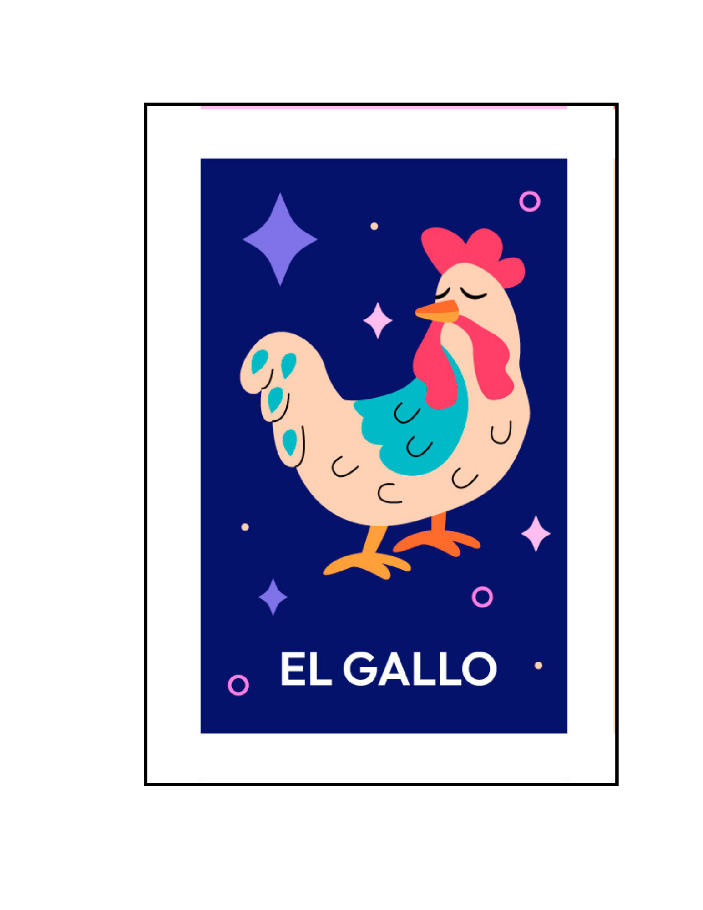

|

EL GALLO
|
'En el corazón de la mañana serena, el gallo se alza como un símbolo eterno'
At dawn, with its crowing, the rooster, the lord of the mornings, begins. With its erect crest and bright plumage, in the corral its figure rises. Its wings unfold a range of colors, while its chorus announces the dawn. With each cry, the rooster proclaims that the new day brings hope and glory. With its spurs, brave and bold, the rooster looks imposing and fierce. He is not afraid of challenges or dangers, he is the guardian of the corral, always whole. His sharp, watchful and attentive eyes scan the terrain with skill. The rooster guards his flock with love and pride, with his nobility. And when the sun sets on the horizon, the rooster finds a well-deserved rest. Let the moon and the stars guide, while he rests, serene and asleep. This is the rooster, symbol of resilience, with its song it announces life. With his presence, he shows us the courage to face each day without measure. O rooster, majestic and brave bird, with your courage and your indomitable spirit. Your singing inspires us to keep going wiyh every awakening